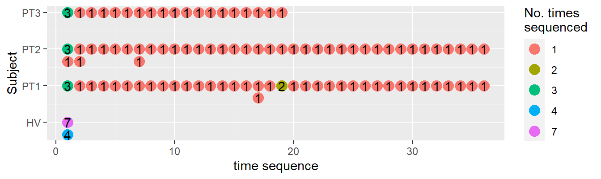
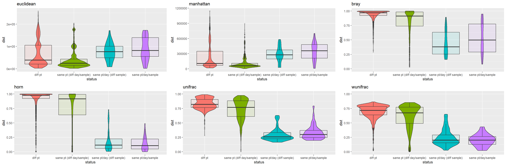
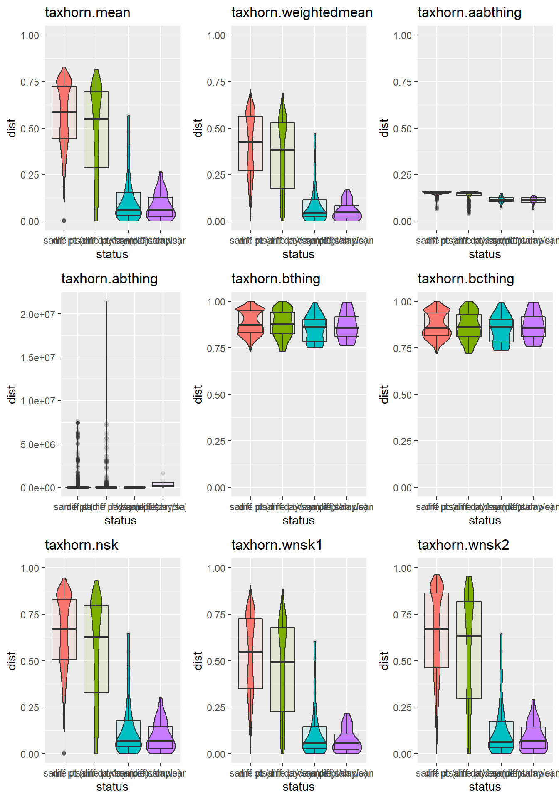
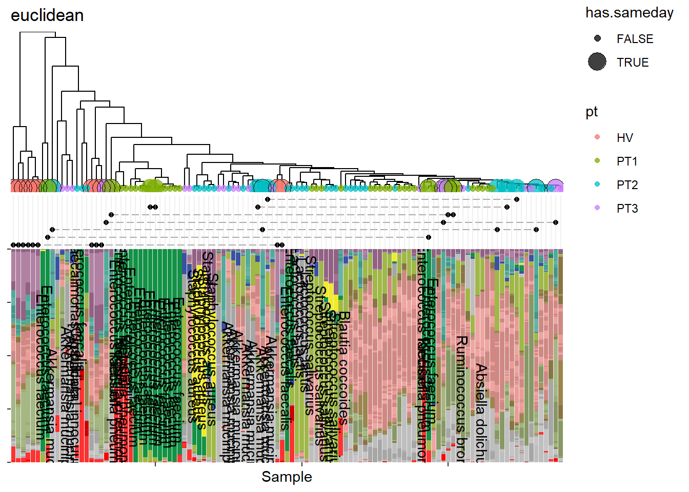
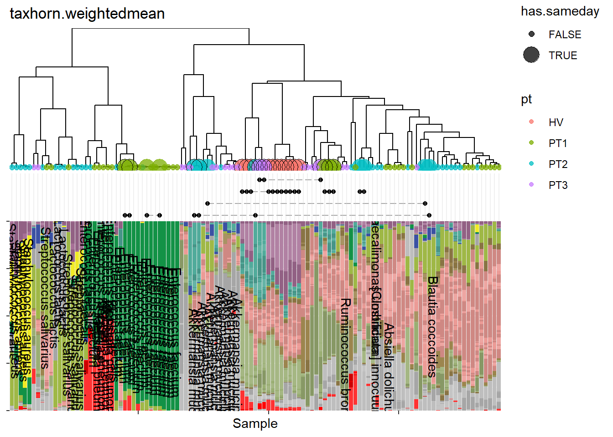

Slamka taxdist project
Prepare data
We examined 113 samples, collected from a healthy volunteer (HV), and 3 cancer patients undergoing cancer treatment (PT1, PT2, PT3). In each subject, multiple samples were collected.
| pt | n.samples |
|---|---|
| HV | 11 |
| PT1 | 40 |
| PT2 | 41 |
| PT3 | 21 |
Each subject’s samples were collected on different days, but also collected on the same day. Some samples were also sequenced multiple times.

By selecting all possible pairwise combinations of the sequencing data, we generated various types of two-sample comparisons:
Samples from 2 different subjects.
Samples from the same subject, but at 2 different timepoints.
2 samples taken from the same patient and same day.
2 sequencing runs of the same sample.
# A tibble: 4 x 2
`Pairwise comparison type` n
<chr> <int>
1 diff pt 4463
2 same pt (diff day/sample) 1794
3 same pt/day (diff sample) 34
4 same pt/day/sample 37| Pairwise comparison type | n |
|---|---|
| diff pt | 4463 |
| same pt (diff day/sample) | 1794 |
| same pt/day (diff sample) | 34 |
| same pt/day/sample | 37 |
A good distace metric should ideally be capable of demonstrating meaningful microbiome differences between individuals, and changes that occur because of antibiotic disruption. It should not be overly affected by minor differences between samples in a stable individual. We reason that #1 and #2 comparisons would likely yield differences that vary greatly (i.e. wide range of distances, from 0 to 1). On the other hand, #3 and #4 comparisons would be expected to be very similar (i.e. low distances nearing 0).
Conventional distance metrics are not ideal when it comes to discerning meaningful differences, as evidenced by the violin plots.

We attempted a variety of custom distance functions, where distance was derived by calculating separate distance values across all pairwise samples, after by collapsing by each taxonomic level. The functions shown below were various ways to combined the taxonomic level-specific distances. We find taxhorn.wsk1 to be the most optimal combining function, which is the weight mean of distances after excluding Superkingdom level.

If we look at hierarchical clustering of samples based on calculated distances, we can see that the weighted average taxhorn puts out a more desirable ordering. For example, note how samples dominated by Enterococcus more naturally clusters together.

asdf
